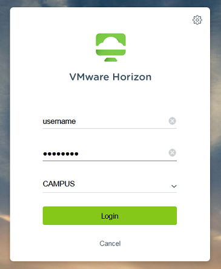
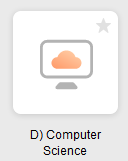
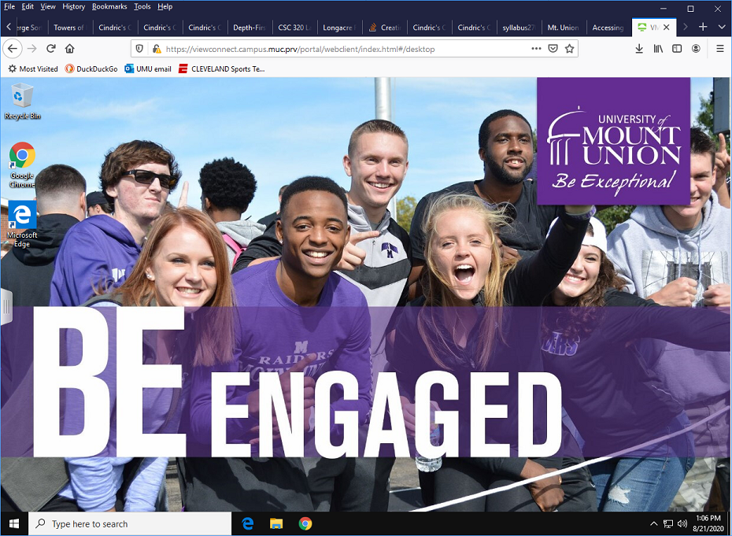
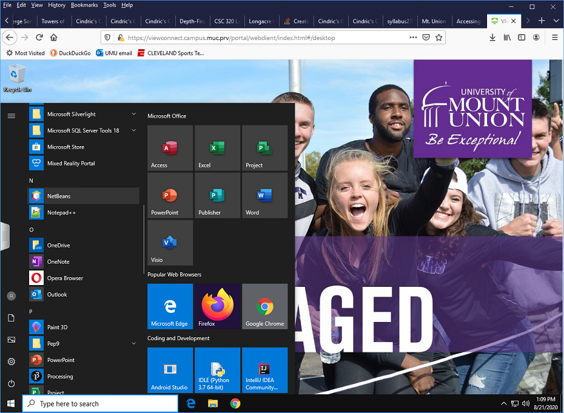
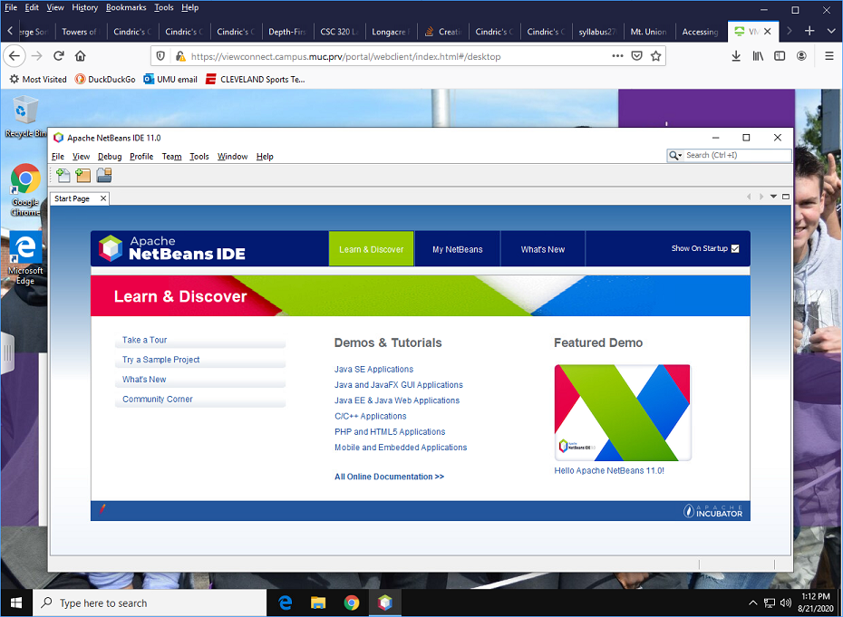
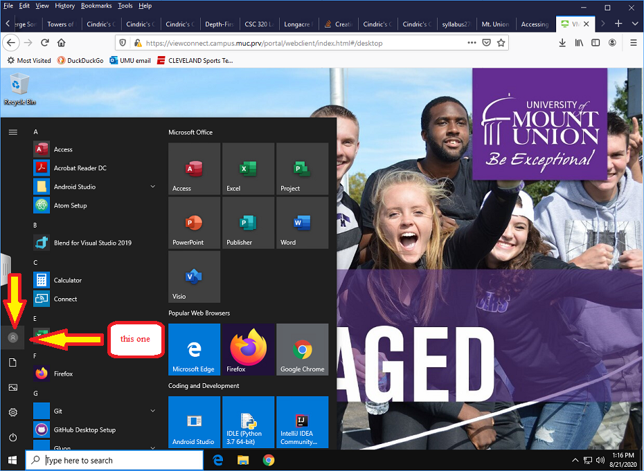
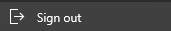
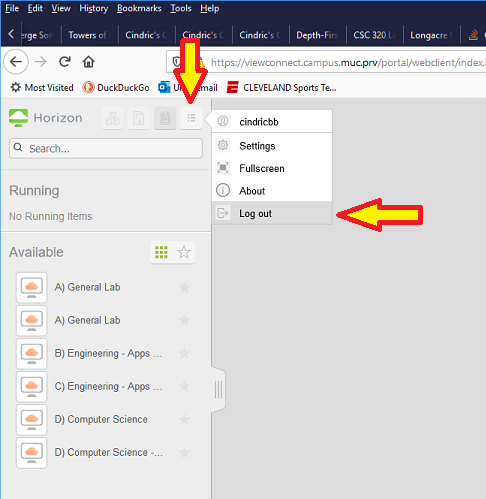

Accessing the CS Lab Virtual Desktop with your web browser
The CS Lab Virtual Desktop is a web-based interface that allows you to run all of the programs that are installed in our Lab image using a web browser. You can use this interface to work in the browser as if you were working with an actual computer. All of the software you need for the course can be accessed from the Lab image.
Here are steps to follow to launch the CS Virtual Desktop:
- Click this link to the VMWare Horizon login page. Enter your username and password, make sure the pull-down box says "CAMPUS", and click Login.

- A selection of choices will appear for different lab configurations. As of August 21, 2020, the Computer Science image for the current year is not yet working (it is named D) Computer Science - Test). So until further notice, you may choose the option titled D) Computer Science. This is functional, and will be usable for coursework in CSC 120 at the start of the semester. As soon as the image for this year is working, this page will be updated and your instructor will inform you via announcement.

- The image will load in the browser window, and you will see a typical Windows startup screen (blue background, spinning icon). After a few moments, the virtual desktop image will appear in your browser window. It looks like the desktop of a Windows computer.

- You can click the Start button at the bottom left of the virtual desktop to launch programs, such as NetBeans as shown here:

- If NetBeans is launched, the program starts up and is displayed in the browser:

- You can run other programs, use File Explorer to browse your disks, and otherwise interact with the virtual image in the way you would use a computer.
When you are finished with your session, follow these steps to completely log out:
-
Click the Start button and click on the top icon at the left that looks like a head and shoulders:

-
Choose Sign out from the list of options that appears :

You will see a Signing out message, and then a dialog will appear telling you the session has been disconnected. Click the Close button.
-
To completely end your session, click the Open Menu icon at the top-right of the left column in the browser window, and choose Log out, then click OK to confirm that you really want to leave. You may then close the browser tab.
